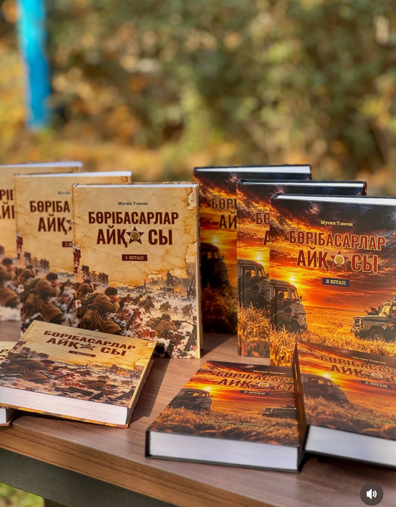

Тарихи-деректі роман
Бөрібасарлар
айқасы
Тарих. Ерлік. Әке аманаты. Елге қызмет етудің өнегелі жолы.

Кітап туралы
«Бөрібасарлар айқасы» — архивтік деректерге негізделген тарихи-деректі роман.
Шығармада майдангер Сәрсек Сағитұлының Жаңақаладан Пиллауға дейінгі жауынгерлік жолы мен соғыстан кейінгі қызметі баяндалады. Оның өмір жолы ұлы Ғибатолла Сәрсекұлының тағдырымен сабақтасады.
Әке аманатын жалғаған Ғибатолланың ел тыныштығын қорғау жолындағы қызметі, өмірлік тәжірибесі мен жауапкершілігі шығарманың негізгі өзегін құрайды.
Кітап оқырманды тарихи жадыны құрметтеуге, азаматтық борыш пен ұрпақтар сабақтастығы туралы ойлануға шақырады.
- Шыққан жылы
- 2026
- Баспа
- «Жебе» баспа үйі
- ISBN
- 978-601-7716-24-0
- Томдар саны
- 2 кітап
Кітаптан үзінді
«Асықпа, — деді. — Асыққан адам кейде өз ойына өзі сеніп қалады». «Бөрібасарлар айқасы», бірінші тарау
Кітап туралы қосымша ақпарат
Бикташев Ғалымжан Қадырович: өмірбаяны мен еңбек жолы
Бикташев Ғалымжан Қадырович 1958 жылғы 27 қаңтарда Ресей Федерациясының Орынбор облысы Шарлық ауданына қарасты Сарманай ауылында дүниеге келген.
Жеті жасында ауылдағы мектептің табалдырығын аттап, орта білім алу мақсатында оқуға барған. Мектеп қабырғасында білім алып, оны аяқтағаннан кейін Қарағанды қаласындағы әскери оқу орнына оқуға түскен. Әскери оқу орнында білім алу барысында тәртіптілікке, жауапкершілікке және Отан алдындағы борышын адал атқаруға ерекше мән берген.
Әскери міндетін атқарып, азаматтық борышын өтеу мақсатында әскер қатарына шақырылған. Әскер қатарында жүріп, әскери тәртіп пен төзімділікті меңгеріп, елге қызмет етудің маңызын терең түсінген.
Қызмет жолы
-
Милиционер-жүргізуші Орал облыстық атқару комитетінің ішкі істер бөлімі. Ұжымның жолдамасымен ПМК-808 арқылы ішкі істер органдарының қызметіне қабылданған.
-
Жол-патрульдік қызмет инспекторы Орал облыстық атқару комитеті ішкі істер басқармасының жол-патрульдік қызметінің жеке батальоны.
-
Жол-патрульдік қызмет инспекторы Жымпиты аудандық ішкі істер бөлімі.
-
Инспектор Орал облыстық ішкі істер басқармасы Мемлекеттік автомобиль инспекциясының жол-патрульдік қызметі жеке батальоны.
-
Учаскелік милиция инспекторы Жымпиты аудандық атқару комитетінің ішкі істер бөлімі.
-
Уақытша ұстау изоляторының бастығы Жымпиты аудандық атқару комитетінің ішкі істер бөлімі.
-
Учаскелік милиция инспекторы Сырым аудандық ішкі істер бөлімі.
-
Паспорт үстелінің бастығы Сырым аудандық ішкі істер бөлімі.
-
Кадр және тәрбие жұмысы жөніндегі бастықтың орынбасары Сырым аудандық ішкі істер бөлімі.
-
Кадр және тәрбие жұмысы жөніндегі бастықтың орынбасары Штаттық өзгерістерге байланысты осы қызметті жалғастырған. Сырым аудандық ішкі істер бөлімі.
-
Запасқа босатылды Қазақстан Республикасы Ішкі істер органдарының тиісті бұйрығына сәйкес, жасына байланысты ішкі істер органдарының запасына босатылған.
Ғалымжан Қадырович ішкі істер органдарында 1981 жылдан 2003 жылға дейін қызмет атқарып, өзіне жүктелген міндеттерді орындауға күш-жігерін жұмсады. Қызмет барысында жол қауіпсіздігін қамтамасыз ету, қоғамдық тәртіпті сақтау, құқық бұзушылықтардың алдын алу, азаматтардың қауіпсіздігін қорғау және кадрлық-тәрбиелік жұмыстарды жүргізу бағыттарында еңбек етті.
Ғалымжан Қадыровичтің еңбек жолы — ұзақ жылдар бойы ішкі істер органдарында қызмет атқарып, ел тыныштығы мен қоғамдық қауіпсіздікті қамтамасыз етуге үлес қосқан азаматтың өмір жолы. Ол өзінің кәсіби қызметі арқылы жауапкершілік пен адал еңбектің үлгісін көрсетті.
Оның өмірбаяны мен еңбек жолы жас ұрпаққа Отанға қызмет етудің, тәртіпті сақтаудың және өз міндетіне адал болудың маңызын танытатын өнегелі жол болып табылады.
Байланыс
Кітап туралы қосымша ақпарат алу немесе оқырман пікірін жолдау үшін автормен байланысыңыз.